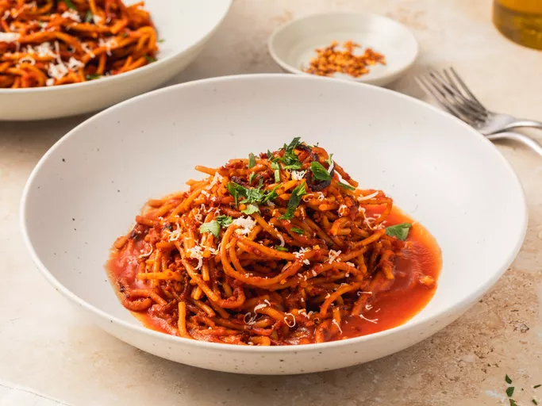

Spaghetti

Description
A classic spaghetti dish typically consists of long, thin pasta (spaghetti) cooked to al dente and served with a flavorful sauce,
often made from tomatoes, garlic, onions, and herbs. Variations include additions like ground meat, seafood, or vegetables for depth.
The dish is garnished with grated Parmesan cheese, fresh basil, and a sprinkle of black pepper, creating a delicious balance
of savory and aromatic flavors.
Ingredients
- Spaghetti
- Olive Oil - 2tbsp
- Garlic - 3 cloves, minced
- Onion -medium, finely chopped
- Ground meat - 1lb (450 g) beef, pork or a mix
- Canned crushed tomatoes - 1 can (28 oz or 800 g)
- Tomato Paste - 2 tbsp
- Fresh basil - handful, chopped
- Dried oregano - 1 tsp
- Salt and pepper - to taste
- Sugar (optional) - 1/2 tsp, to balance acidity
- Grated Parmesan cheese
Steps
- Cook the spaghetti in salted boiling water until al dente, then drain.
- In a large pan, heat olive oil, add garlic and onion, and sauté until soft.
- Add ground meat if using, cooking until browned. Then add tomatoes, tomato paste, oregano, salt, and pepper.
- Simmer for 15-20 minutes, stirring occasionally. Adjust seasoning and add a pinch of sugar if needed.
- Toss with cooked spaghetti, top with fresh basil and Parmesan, and serve warm.
This recipe allows flexibility to add or omit ingredients like meat or fresh herbs to suit personal taste.